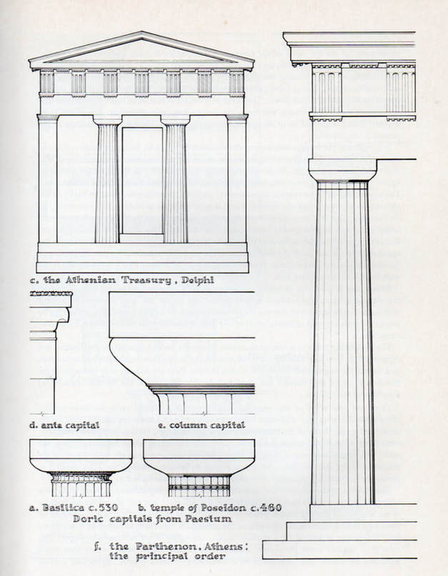

3D diorama showing the Doric order of classical western architecture. This model has a tremendously high number of polys because I subdivided the columns. This obviously wouldn't fly in a game-engine, but a quick run through the normal baking oven would yield a realtime-ready model.
 Source Unknown. Accessed from athenskey.com